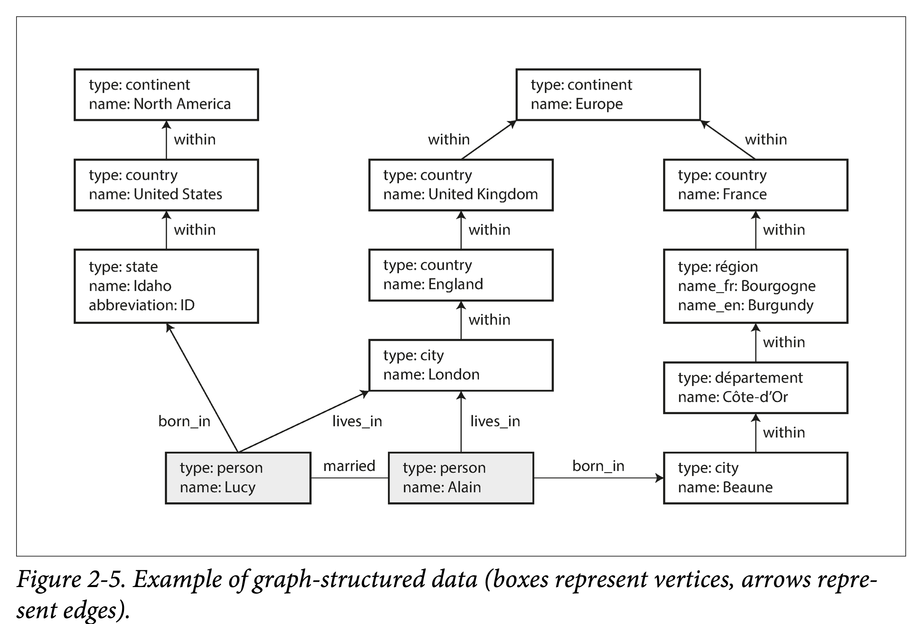

数据模型和查询语言
介绍用于数据存储和查询的通用数据模型。
每层通过提供一个简单的数据模型来隐藏下层的复杂性。
A data model is an abstract model that organizes elements of data and standardizes how they relate to one another and to the properties of real-world entities. —https://en.wikipedia.org/wiki/Data_model
发展历史：
- 数据最初被表示为一颗大树（层次模型），不利于表示多对多关系，因此发明关系模型解决该问题。
- 新的应用模型不太适合关系型，NOSQL主要在两个方向上存在分歧：
- 文档数据库：数据来自于自包含文档，且一个文档与其他文档之间的关联很少；
- 图数据库：所有数据都可能会相关联；
其他数据模型：
- 基因组数据：相似性搜索，相似但完全不同的大型字符串数据匹配，专用软件GenBank。
- 全文检索：经常与数据库一起使用的模型，软件如 ElasticSearch。
关系模型与文档模型
融合关系型和文档模型是未来数据库发展的一条很好的途径。
- MyQL 5.7, PostgreSQL 9.3 支持 JSON 文档。
关系模型（SQL）：OLAP/OLTP/HTAP
-
支持一对一、一对多、多对一、多对多关系；
-
消除数据重复（ID作为关键字联结）是数据库规范化的核心思想；
-
写时模式：所有记录都具有相同的数据结构；
MYSQL 进行 ALTER TABLE时会把现在的整张表进行复制，但有工具可以解决\(^{[1-3]}\)。
NoSQL（Not only SQL）是对不同于传统的关系数据库的数据库管理系统的统称。根据 DB-Engines 排名，现在最受欢迎的 NoSQL 前几名为：MongoDB，Redis，ElasticSearch，Cassandra。
其催动因素有：
- 处理更大数据集：更强伸缩性、更高吞吐量
- 开源免费的兴起：冲击了原来把握在厂商的标准
- 特化的查询操作：关系数据库难以支持的，比如图中的多跳分析
- 表达能力更强：关系模型约束太严，限制太多
文档模型（JSON）：如简历的存储
- 适合一对一、一对多的关系；
- 不适合多对一、多对多的关系，联结的支持很弱；
- 读时模式：记录并不是都是同样的数据结构（动态，不可预估）；
- 局部性更好：对于应用程序频繁访问整个文档的情形；
- 通常建议文档应该尽量小且避免写入时增加文档大小\(^{[4]}\)；
在表示多对一和多对多的关系时，关系数据库和文档数据库没有根本不同，由唯一的标识符引用：
- 关系模型中称为外键，文档模型中称为文档引用；
- 文档模型强在模式灵活性（读模式），局部性带来较好性能，注重整体，更接近应用的数据结构；
- 关系模型（写模式）强在连接操作、多对一和多对多关系更简洁的表达上，注重部分（分解）；
数据查询语言
命令式
- 以特定顺序执行某些操作；
声明式
-
指定所需数据模式，结果满足的条件以及如何转换数据，不需要指明如何实现；
-
通常适用于并行执行\(^{[5]}\)；
Map-Reduce
- 函数式编程的思想，部分封装（用户不需定义数据集的遍历方式、Shuffle过程，但需要定义单条数据处理过程）；
- 纯函数，不能带有副作用，只能使用传递的数据作为输入（幂等）；
图状数据模型
适用于高度关联的数据，如社交网络、Web图、公路/铁路网；
图数据模型的基本概念一般有三个：点，边和附着于两者之上的属性。
常见的可以用图建模的场景：
| 例子 | 建模 | 应用 |
|---|---|---|
| 社交图谱 | 人是点，follow 关系是边 | 六度分隔，信息流推荐 |
| 互联网 | 网页是点，链接关系是边 | PageRank |
| 路网 | 交通枢纽是点，铁路/公路是边 | 路径规划，导航最短路径 |
| 洗钱 | 账户是点，转账关系是边 | 判断是否有环 |
| 知识图谱 | 概念时点，关联关系是边 | 启发式问答 |
示例图：

图模型（property graph）
Neo4j、Titan、InfiniteGraph
数据结构
| 点 (vertices, nodes, entities) | 边 (edges, relations, arcs) |
|---|---|
| 全局唯一 ID | 全局唯一 ID |
| 出边集合 | 起始点 |
| 入边集合 | 终止点 |
| 属性集（kv 对表示） | 属性集（kv 对表示） |
| 表示点类型的 type？（异构图） | 表示边类型的 label |
图是一种很灵活的建模方式：
- 任何两点间都可以插入边，没有任何模式限制。
- 对于任何顶点都可以高效找到其入边和出边，从而进行图遍历。
- 使用多种标签来标记不同类型边（关系）。
图有利于演化：向应用程序添加功能时，图可以容易扩展以适应数据结构的不断变化。
- 人对食物过敏，可以新增过敏源顶点，人和过敏源的边表示过敏；
Cypher 查询语言
Cypher 是 Neo4j 创造的一种查询语言。
图2-5左边部分的插入语句：
CREATE
(NAmerica:Location {name:'North America', type:'continent'}),
(USA:Location {name:'United States', type:'country' }),
(Idaho:Location {name:'Idaho', type:'state' }),
(Lucy:Person {name:'Lucy' }),
(Idaho) -[:WITHIN]-> (USA) -[:WITHIN]-> (NAmerica),
(Lucy) -[:BORN_IN]-> (Idaho)
查询：找出所有从美国移居到欧洲的人名。
MATCH
(person) -[:BORN_IN]-> () -[:WITHIN*0..]-> (us:Location {name:'United States'}),
(person) -[:LIVES_IN]-> () -[:WITHIN*0..]-> (eu:Location {name:'Europe'})
RETURN person.name
如果用SQL进行查询，则需要通过递归公用表达式（WITH RECURSIVE））表示 :WITHIN*0..。
三元存储模型（triple-store）
Datomic、AllegroGraph
（lucy, age, 33), (lucy, marriedTo, alain)
| 概念 | 定义 |
|---|---|
| Subject（主体） | 对应图中的一个点（_:someName) |
| Predicate（谓语） | 1. 如果 Object 是原子数据，则 2. 如果 Object 是另一个 Object，则 Predicate 对应图中的边。 |
| Object（客体） | 1. 一个原子数据，如 string 或者 number。 2. 另一个 Subject。 |
图2-5左边部分的插入语句：Turtle 3元组
@prefix : <urn:example:>.
_:lucy a: Person; :name "Lucy"; :bornIn _:idaho
_:idaho a: Location; :name "Idaho"; :type "state"; :within _:usa.
_:usa a: Location; :name "United States"; :type "country"; :within _:namerica.
_:namerica a :Location; :name "North America"; :type "continent".
语义网
万维网之父 Tim Berners Lee 于 1998 年提出，知识图谱前身。其目的在于对网络中的资源进行结构化，从而让计算机能够理解网络中的数据。
RDF（Resource Description Framwork），让不同的网站以一致的格式发布数据，供计算机可读。
- 至今（2021年）没有在实践中见到任何靠谱的实现；
- 技术栈影响了后来的知识图谱和图查询语言。
SparQL 查询语言
采用 RDF 数据模型的三元存储查询语言\(^{[6,7]}\)。
查询：找出所有从美国移居到欧洲的人名。
PREFIX : <urn:example:>
SELECT ?personName WHERE {
?person :name ?personName.
?person :bornIn / :within* / :name "United States".
?person :livesIn / :within* / :name "Europe".
}
图模型与网络模型
图模型是网络模型旧瓶装新酒吗？否，他们在很多重要的方面都不一样。
| 模型 | 图模型（Graph Model） | 网络模型（Network Model） |
|---|---|---|
| 连接方式 | 任意两个点之间都有可以有边 | 指定了嵌套约束 |
| 记录查找 | 1. 使用全局 ID 2. 使用属性索引。 3. 使用图遍历。 | 只能使用路径查询 |
| 有序性 | 点和边都是无序的 | 记录的孩子们是有序集合，在插入时需要考虑维持有序的开销 |
| 查询语言 | 即可命令式，也可以声明式 | 命令式的 |
参考文献
[1] "Percona Toolkit Documentation: pt-online-schema-change." Percona Ireland Ltd., 2013.
[2] Rany Keddo, Tobias Bielohlawek, and Tobias Schmidt: "Large Hadron Migrator," SoundCloud, 2013.
[3] Shlomi Noach: "gh-ost: GitHub's Online Schema Migration Tool for MySQL," githubengineering.com, August 1, 2016.
[4] Sandeep Parikh and Kelly Stirman: "Schema Design for Time Series Data in MongoDB," blog.mongodb.org, October 30, 2013.
[5] Joseph M. Hellerstein: "Th Declarative Impertative: Experiences and Conjuectures in Distributed Logic," Electrical Engineering aned Computer Sciences, University of California at Berkeley, Tech report UCB/EECS-2010-90, June 2010.
[6] "Apache Jena", Apache Software Foundation.
[7] Steve Harris, Andy Seaborne, and Eric Prud'homemeaux: "SPARQL 1.1 Query Language," W3C Recommendation, March 2013.